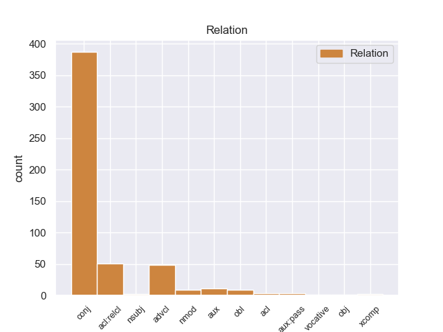
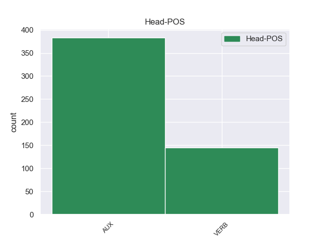
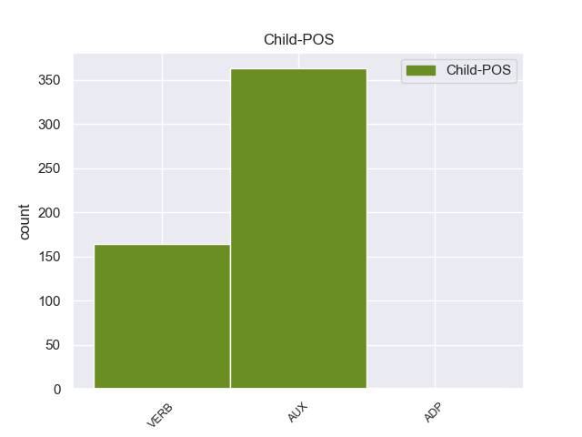

Distribution of features within this leaf



Agreement Rules sorted by frequency.
- When the dependent token is the conjunct(conj) of the head token, and the head token is AUX and the dependent token is AUX.
1 पत्रिका _ _ _ _ 0 _ _ _
2 के _ _ _ _ 0 _ _ _
3 अनुसार _ _ _ _ 0 _ _ _
4 खान _ _ _ _ 0 _ _ _
5 की _ _ _ _ 0 _ _ _
6 इन _ _ _ _ 0 _ _ _
7 यात्राओं _ _ _ _ 0 _ _ _
8 का _ _ _ _ 0 _ _ _
9 उद्देश्य _ _ _ _ 0 _ _ _
10 अभी _ _ _ _ 0 _ _ _
11 तक _ _ _ _ 0 _ _ _
12 स्पष्ट _ _ _ _ 0 _ _ _
13 नहीं _ _ _ _ 0 _ _ _
14 है _ _ _ _ 0 _ _ _
15 , _ _ _ _ 0 _ _ _
16 लेकिन _ _ _ _ 0 _ _ _
17 खुफिया _ _ _ _ 0 _ _ _
18 अधिकारियों _ _ _ _ 0 _ _ _
19 का _ _ _ _ 0 _ _ _
20 मानना _ _ _ _ 0 _ _ _
21 है _ _ _ _ 0 _ _ _
22 कि _ _ _ _ 0 _ _ _
23 सऊदी _ _ _ _ 0 _ _ _
24 अरब _ _ _ _ 0 _ _ _
25 और _ _ _ _ 0 _ _ _
26 मिस्र _ _ _ _ 0 _ _ _
27 परमाणु _ _ _ _ 0 _ _ _
28 तक़नीक _ _ _ _ 0 _ _ _
29 की _ _ _ _ 0 _ _ _
30 तलाश _ _ _ _ 0 _ _ _
31 में _ _ _ _ 0 _ _ _
32 हैं है AUX VM Mood=Ind|Number=Plur|Person=3|Tense=Pres|VerbForm=Fin|Voice=Act 0 _ _ _
33 और _ _ _ _ 0 _ _ _
34 कई _ _ _ _ 0 _ _ _
35 अफ्रीकी _ _ _ _ 0 _ _ _
36 देश _ _ _ _ 0 _ _ _
37 कच्चे _ _ _ _ 0 _ _ _
38 यूरेनियम _ _ _ _ 0 _ _ _
39 संपन्न _ _ _ _ 0 _ _ _
40 हैं है AUX VM Mood=Ind|Number=Plur|Person=3|Tense=Pres|VerbForm=Fin|Voice=Act 32 conj _ ChunkId=VGF4|ChunkType=head|Stype=declarative|Tam=hE|Translit=haiṁ|Vib=है
41 । _ _ _ _ 0 _ _ _
1 पत्रिका _ _ _ _ 0 _ _ _
2 के _ _ _ _ 0 _ _ _
3 अनुसार _ _ _ _ 0 _ _ _
4 खान _ _ _ _ 0 _ _ _
5 की _ _ _ _ 0 _ _ _
6 इन _ _ _ _ 0 _ _ _
7 यात्राओं _ _ _ _ 0 _ _ _
8 का _ _ _ _ 0 _ _ _
9 उद्देश्य _ _ _ _ 0 _ _ _
10 अभी _ _ _ _ 0 _ _ _
11 तक _ _ _ _ 0 _ _ _
12 स्पष्ट _ _ _ _ 0 _ _ _
13 नहीं _ _ _ _ 0 _ _ _
14 है है VERB VM Mood=Ind|Number=Sing|Person=3|Tense=Pres|VerbForm=Fin|Voice=Act 0 _ _ _
15 , _ _ _ _ 0 _ _ _
16 लेकिन _ _ _ _ 0 _ _ _
17 खुफिया _ _ _ _ 0 _ _ _
18 अधिकारियों _ _ _ _ 0 _ _ _
19 का _ _ _ _ 0 _ _ _
20 मानना _ _ _ _ 0 _ _ _
21 है है VERB VM Mood=Ind|Number=Sing|Person=3|Tense=Pres|VerbForm=Fin|Voice=Act 14 conj _ ChunkId=VGF2|ChunkType=head|Stype=declarative|Tam=hE|Translit=hai|Vib=है
22 कि _ _ _ _ 0 _ _ _
23 सऊदी _ _ _ _ 0 _ _ _
24 अरब _ _ _ _ 0 _ _ _
25 और _ _ _ _ 0 _ _ _
26 मिस्र _ _ _ _ 0 _ _ _
27 परमाणु _ _ _ _ 0 _ _ _
28 तक़नीक _ _ _ _ 0 _ _ _
29 की _ _ _ _ 0 _ _ _
30 तलाश _ _ _ _ 0 _ _ _
31 में _ _ _ _ 0 _ _ _
32 हैं _ _ _ _ 0 _ _ _
33 और _ _ _ _ 0 _ _ _
34 कई _ _ _ _ 0 _ _ _
35 अफ्रीकी _ _ _ _ 0 _ _ _
36 देश _ _ _ _ 0 _ _ _
37 कच्चे _ _ _ _ 0 _ _ _
38 यूरेनियम _ _ _ _ 0 _ _ _
39 संपन्न _ _ _ _ 0 _ _ _
40 हैं _ _ _ _ 0 _ _ _
41 । _ _ _ _ 0 _ _ _
1 उन्होंने _ _ _ _ 0 _ _ _
2 कहा _ _ _ _ 0 _ _ _
3 कि _ _ _ _ 0 _ _ _
4 कश्मीरी _ _ _ _ 0 _ _ _
5 लोगों _ _ _ _ 0 _ _ _
6 की _ _ _ _ 0 _ _ _
7 आकांक्षाओं _ _ _ _ 0 _ _ _
8 को _ _ _ _ 0 _ _ _
9 पूरा _ _ _ _ 0 _ _ _
10 करने _ _ _ _ 0 _ _ _
11 का _ _ _ _ 0 _ _ _
12 यह _ _ _ _ 0 _ _ _
13 उचित _ _ _ _ 0 _ _ _
14 समय _ _ _ _ 0 _ _ _
15 है है AUX VM Mood=Ind|Number=Sing|Person=3|Tense=Pres|VerbForm=Fin|Voice=Act 0 _ _ _
16 और _ _ _ _ 0 _ _ _
17 लोकतंत्र _ _ _ _ 0 _ _ _
18 के _ _ _ _ 0 _ _ _
19 इतिहास _ _ _ _ 0 _ _ _
20 में _ _ _ _ 0 _ _ _
21 यह _ _ _ _ 0 _ _ _
22 एक _ _ _ _ 0 _ _ _
23 न्यायोचित _ _ _ _ 0 _ _ _
24 प्रयास _ _ _ _ 0 _ _ _
25 होगा हो VERB VM Gender=Masc|Mood=Ind|Number=Sing|Person=3|Tense=Fut|VerbForm=Fin|Voice=Act 15 conj _ ChunkId=VGF3|ChunkType=head|Stype=declarative|Tam=gA|Translit=hogā|Vib=गा
26 । _ _ _ _ 0 _ _ _
1 रजत _ _ _ _ 0 _ _ _
2 जयंती _ _ _ _ 0 _ _ _
3 मनाने _ _ _ _ 0 _ _ _
4 वाले _ _ _ _ 0 _ _ _
5 और _ _ _ _ 0 _ _ _
6 राजनीतिक _ _ _ _ 0 _ _ _
7 प्रस्ताव _ _ _ _ 0 _ _ _
8 में _ _ _ _ 0 _ _ _
9 इस _ _ _ _ 0 _ _ _
10 बात _ _ _ _ 0 _ _ _
11 का _ _ _ _ 0 _ _ _
12 कोई _ _ _ _ 0 _ _ _
13 जिक्र _ _ _ _ 0 _ _ _
14 नहीं _ _ _ _ 0 _ _ _
15 है _ _ _ _ 0 _ _ _
16 कि _ _ _ _ 0 _ _ _
17 पार्टी _ _ _ _ 0 _ _ _
18 ने _ _ _ _ 0 _ _ _
19 पच्चीस _ _ _ _ 0 _ _ _
20 साल _ _ _ _ 0 _ _ _
21 पहले _ _ _ _ 0 _ _ _
22 जिस _ _ _ _ 0 _ _ _
23 रास्ते _ _ _ _ 0 _ _ _
24 पर _ _ _ _ 0 _ _ _
25 चलने _ _ _ _ 0 _ _ _
26 का _ _ _ _ 0 _ _ _
27 संकल्प _ _ _ _ 0 _ _ _
28 लिया _ _ _ _ 0 _ _ _
29 था _ _ _ _ 0 _ _ _
30 , _ _ _ _ 0 _ _ _
31 वह _ _ _ _ 0 _ _ _
32 रास्ता _ _ _ _ 0 _ _ _
33 क्या _ _ _ _ 0 _ _ _
34 वही _ _ _ _ 0 _ _ _
35 है है AUX VM Mood=Ind|Number=Sing|Person=3|Tense=Pres|VerbForm=Fin|Voice=Act 0 _ _ _
36 जिस _ _ _ _ 0 _ _ _
37 पर _ _ _ _ 0 _ _ _
38 वह _ _ _ _ 0 _ _ _
39 आज _ _ _ _ 0 _ _ _
40 खड़ी _ _ _ _ 0 _ _ _
41 है है AUX VM Mood=Ind|Number=Sing|Person=3|Tense=Pres|VerbForm=Fin|Voice=Act 35 acl:relcl _ ChunkId=VGF4|ChunkType=head|Stype=declarative|Tam=hE|Translit=hai|Vib=है
42 । _ _ _ _ 0 _ _ _
1 वोल्कर _ _ _ _ 0 _ _ _
2 ने _ _ _ _ 0 _ _ _
3 कहा _ _ _ _ 0 _ _ _
4 कि _ _ _ _ 0 _ _ _
5 उन्हें _ _ _ _ 0 _ _ _
6 यह _ _ _ _ 0 _ _ _
7 पता _ _ _ _ 0 _ _ _
8 नहीं _ _ _ _ 0 _ _ _
9 था _ _ _ _ 0 _ _ _
10 कि _ _ _ _ 0 _ _ _
11 १८ _ _ _ _ 0 _ _ _
12 महीने _ _ _ _ 0 _ _ _
13 लंबी _ _ _ _ 0 _ _ _
14 जाँच _ _ _ _ 0 _ _ _
15 से _ _ _ _ 0 _ _ _
16 इस _ _ _ _ 0 _ _ _
17 विश्वस्तरीय _ _ _ _ 0 _ _ _
18 संस्था _ _ _ _ 0 _ _ _
19 का _ _ _ _ 0 _ _ _
20 घोटाला _ _ _ _ 0 _ _ _
21 कहाँ _ _ _ _ 0 _ _ _
22 तक _ _ _ _ 0 _ _ _
23 खुलेगा खुल VERB VM Gender=Masc|Mood=Ind|Number=Sing|Person=3|Tense=Fut|VerbForm=Fin|Voice=Act 0 _ _ _
24 और _ _ _ _ 0 _ _ _
25 वह _ _ _ _ 0 _ _ _
26 इसके _ _ _ _ 0 _ _ _
27 नेता _ _ _ _ 0 _ _ _
28 महासचिव _ _ _ _ 0 _ _ _
29 कोफी _ _ _ _ 0 _ _ _
30 अन्नान _ _ _ _ 0 _ _ _
31 की _ _ _ _ 0 _ _ _
32 कुर्सी _ _ _ _ 0 _ _ _
33 हिलाने _ _ _ _ 0 _ _ _
34 के _ _ _ _ 0 _ _ _
35 इतने _ _ _ _ 0 _ _ _
36 नज़दीक _ _ _ _ 0 _ _ _
37 पहुँच _ _ _ _ 0 _ _ _
38 जाएंगे जा AUX VAUX Gender=Masc|Mood=Ind|Number=Sing|Person=3|Polite=Form|Tense=Fut|VerbForm=Fin 23 conj _ ChunkId=VGF4|ChunkType=child|Tam=gA|Translit=jāeṁge|Vib=गा
39 । _ _ _ _ 0 _ _ _
1 ७० _ _ _ _ 0 _ _ _
2 वर्षीय _ _ _ _ 0 _ _ _
3 इस _ _ _ _ 0 _ _ _
4 अहिंसावादी _ _ _ _ 0 _ _ _
5 तिब्बती _ _ _ _ 0 _ _ _
6 नेता _ _ _ _ 0 _ _ _
7 ने _ _ _ _ 0 _ _ _
8 यह _ _ _ _ 0 _ _ _
9 भी _ _ _ _ 0 _ _ _
10 कहा _ _ _ _ 0 _ _ _
11 कि _ _ _ _ 0 _ _ _
12 वे _ _ _ _ 0 _ _ _
13 चीन _ _ _ _ 0 _ _ _
14 से _ _ _ _ 0 _ _ _
15 अलगाव _ _ _ _ 0 _ _ _
16 की _ _ _ _ 0 _ _ _
17 बात _ _ _ _ 0 _ _ _
18 नहीं _ _ _ _ 0 _ _ _
19 कर _ _ _ _ 0 _ _ _
20 रहे _ _ _ _ 0 _ _ _
21 हैं है AUX VAUX Mood=Ind|Number=Sing|Person=3|Polite=Form|Tense=Pres|VerbForm=Fin 0 _ _ _
22 बल्कि _ _ _ _ 0 _ _ _
23 वे _ _ _ _ 0 _ _ _
24 तो _ _ _ _ 0 _ _ _
25 चीनी _ _ _ _ 0 _ _ _
26 संविधान _ _ _ _ 0 _ _ _
27 के _ _ _ _ 0 _ _ _
28 दायरे _ _ _ _ 0 _ _ _
29 में _ _ _ _ 0 _ _ _
30 ही _ _ _ _ 0 _ _ _
31 तिब्बत _ _ _ _ 0 _ _ _
32 समस्या _ _ _ _ 0 _ _ _
33 का _ _ _ _ 0 _ _ _
34 हल _ _ _ _ 0 _ _ _
35 चाहते _ _ _ _ 0 _ _ _
36 हैं है AUX VAUX Mood=Ind|Number=Sing|Person=3|Polite=Form|Tense=Pres|VerbForm=Fin 21 advcl _ ChunkId=VGF3|ChunkType=child|Tam=hE|Translit=haiṁ|Vib=है
37 । _ _ _ _ 0 _ _ _
1 फार्मा _ _ _ _ 0 _ _ _
2 कंपनियों _ _ _ _ 0 _ _ _
3 के _ _ _ _ 0 _ _ _
4 शेयर _ _ _ _ 0 _ _ _
5 ऑल _ _ _ _ 0 _ _ _
6 टाइम _ _ _ _ 0 _ _ _
7 फेवरिट _ _ _ _ 0 _ _ _
8 हैं है AUX VM Mood=Ind|Number=Plur|Person=3|Tense=Pres|VerbForm=Fin|Voice=Act 0 _ _ _
9 , _ _ _ _ 0 _ _ _
10 कुछ _ _ _ _ 0 _ _ _
11 बैंकों _ _ _ _ 0 _ _ _
12 के _ _ _ _ 0 _ _ _
13 शेयर _ _ _ _ 0 _ _ _
14 अब _ _ _ _ 0 _ _ _
15 भी _ _ _ _ 0 _ _ _
16 अंडर _ _ _ _ 0 _ _ _
17 वैल्यूड _ _ _ _ 0 _ _ _
18 हैं है AUX VM Mood=Ind|Number=Plur|Person=3|Tense=Pres|VerbForm=Fin|Voice=Act 8 nmod _ ChunkId=VGF2|ChunkType=head|SpaceAfter=No|Stype=declarative|Tam=hE|Translit=haiṁ|Vib=है
19 , _ _ _ _ 0 _ _ _
20 आप _ _ _ _ 0 _ _ _
21 उनमें _ _ _ _ 0 _ _ _
22 निवेश _ _ _ _ 0 _ _ _
23 करके _ _ _ _ 0 _ _ _
24 मुनाफा _ _ _ _ 0 _ _ _
25 वसूल _ _ _ _ 0 _ _ _
26 सकते _ _ _ _ 0 _ _ _
27 हैं _ _ _ _ 0 _ _ _
28 । _ _ _ _ 0 _ _ _
1 जहां _ _ _ _ 0 _ _ _
2 तक _ _ _ _ 0 _ _ _
3 दिल्ली _ _ _ _ 0 _ _ _
4 में _ _ _ _ 0 _ _ _
5 बारिश _ _ _ _ 0 _ _ _
6 का _ _ _ _ 0 _ _ _
7 सवाल _ _ _ _ 0 _ _ _
8 है है AUX VM Mood=Ind|Number=Sing|Person=3|Tense=Pres|VerbForm=Fin|Voice=Act 0 _ _ _
9 तो _ _ _ _ 0 _ _ _
10 यह _ _ _ _ 0 _ _ _
11 कम _ _ _ _ 0 _ _ _
12 दबाव _ _ _ _ 0 _ _ _
13 के _ _ _ _ 0 _ _ _
14 इस _ _ _ _ 0 _ _ _
15 क्षेत्र _ _ _ _ 0 _ _ _
16 के _ _ _ _ 0 _ _ _
17 घनीभूत _ _ _ _ 0 _ _ _
18 होने _ _ _ _ 0 _ _ _
19 पर _ _ _ _ 0 _ _ _
20 निर्भर _ _ _ _ 0 _ _ _
21 है है VERB VM Mood=Ind|Number=Sing|Person=3|Tense=Pres|VerbForm=Fin|Voice=Act 8 advcl _ ChunkId=VGF2|ChunkType=head|Stype=declarative|Tam=hE|Translit=hai|Vib=है
22 । _ _ _ _ 0 _ _ _
1 शरीफ _ _ _ _ 0 _ _ _
2 का _ _ _ _ 0 _ _ _
3 यह _ _ _ _ 0 _ _ _
4 बयान _ _ _ _ 0 _ _ _
5 ऐसी _ _ _ _ 0 _ _ _
6 रिपोर्टों _ _ _ _ 0 _ _ _
7 के _ _ _ _ 0 _ _ _
8 बीच _ _ _ _ 0 _ _ _
9 आया _ _ _ _ 0 _ _ _
10 है _ _ _ _ 0 _ _ _
11 कि _ _ _ _ 0 _ _ _
12 जिनमें _ _ _ _ 0 _ _ _
13 कहा _ _ _ _ 0 _ _ _
14 है _ _ _ _ 0 _ _ _
15 कि _ _ _ _ 0 _ _ _
16 मुशर्रफ _ _ _ _ 0 _ _ _
17 ने _ _ _ _ 0 _ _ _
18 शरीफ _ _ _ _ 0 _ _ _
19 के _ _ _ _ 0 _ _ _
20 साथ _ _ _ _ 0 _ _ _
21 राजनीतिक _ _ _ _ 0 _ _ _
22 सुलह _ _ _ _ 0 _ _ _
23 के _ _ _ _ 0 _ _ _
24 लिए _ _ _ _ 0 _ _ _
25 सऊदी _ _ _ _ 0 _ _ _
26 शाही _ _ _ _ 0 _ _ _
27 परिवार _ _ _ _ 0 _ _ _
28 से _ _ _ _ 0 _ _ _
29 मदद _ _ _ _ 0 _ _ _
30 मांगी मांग VERB VM Gender=Fem|Mood=Ind|Number=Sing|Person=3|Tense=Fut|VerbForm=Fin|Voice=Act 31 aux _ ChunkId=VGF3|ChunkType=head|Stype=declarative|Tam=gA|Translit=māṁgī|Vib=गा_है
31 है है AUX VAUX Mood=Ind|Number=Sing|Person=3|Tense=Pres|VerbForm=Fin 0 _ _ _
32 । _ _ _ _ 0 _ _ _
1 ये _ _ _ _ 0 _ _ _
2 ऐसे _ _ _ _ 0 _ _ _
3 मुद्दे _ _ _ _ 0 _ _ _
4 हैं है AUX VM Mood=Ind|Number=Plur|Person=3|Tense=Pres|VerbForm=Fin|Voice=Act 0 _ _ _
5 जिन _ _ _ _ 0 _ _ _
6 पर _ _ _ _ 0 _ _ _
7 हम _ _ _ _ 0 _ _ _
8 विचार _ _ _ _ 0 _ _ _
9 करेगें कर VERB VM Gender=Masc|Mood=Ind|Number=Plur|Person=1|Tense=Fut|VerbForm=Fin|Voice=Act 4 acl:relcl _ ChunkId=VGF2|ChunkType=head|Stype=declarative|Tam=gA|Translit=karegeṁ|Vib=गा
10 । _ _ _ _ 0 _ _ _
1 किसानों _ _ _ _ 0 _ _ _
2 को _ _ _ _ 0 _ _ _
3 उवर्रक _ _ _ _ 0 _ _ _
4 मिलें मिल VERB VM Mood=Sub|Number=Plur|Person=3|VerbForm=Fin|Voice=Act 0 _ _ _
5 , _ _ _ _ 0 _ _ _
6 इसके _ _ _ _ 0 _ _ _
7 लिए _ _ _ _ 0 _ _ _
8 अपनी _ _ _ _ 0 _ _ _
9 वितरण _ _ _ _ 0 _ _ _
10 एजेंसी _ _ _ _ 0 _ _ _
11 पर _ _ _ _ 0 _ _ _
12 नजर _ _ _ _ 0 _ _ _
13 रखें रख VERB VM Mood=Sub|Number=Plur|Person=3|VerbForm=Fin|Voice=Act 4 advcl _ ChunkId=VGF2|ChunkType=head|Stype=imperative|Tam=eM|Translit=rakheṁ|Vib=एं
14 । _ _ _ _ 0 _ _ _
1 सरकार _ _ _ _ 0 _ _ _
2 इस _ _ _ _ 0 _ _ _
3 प्रयास _ _ _ _ 0 _ _ _
4 में _ _ _ _ 0 _ _ _
5 तेजी _ _ _ _ 0 _ _ _
6 लाए ला VERB VM Mood=Sub|Number=Sing|Person=3|VerbForm=Fin|Voice=Act 0 _ _ _
7 ताकि _ _ _ _ 0 _ _ _
8 समस्या _ _ _ _ 0 _ _ _
9 का _ _ _ _ 0 _ _ _
10 शीघ्र _ _ _ _ 0 _ _ _
11 निपटारा _ _ _ _ 0 _ _ _
12 हो _ _ _ _ 0 _ _ _
13 सके सक AUX VAUX Mood=Sub|Number=Sing|Person=3|VerbForm=Fin 6 advcl _ ChunkId=VGF2|ChunkType=child|Tam=eM|Translit=sake|Vib=एं
14 । _ _ _ _ 0 _ _ _
1 लेकिन _ _ _ _ 0 _ _ _
2 इलाहाबाद _ _ _ _ 0 _ _ _
3 विश्वविद्यालय _ _ _ _ 0 _ _ _
4 को _ _ _ _ 0 _ _ _
5 केंद्रीय _ _ _ _ 0 _ _ _
6 दर्जा _ _ _ _ 0 _ _ _
7 मिलने _ _ _ _ 0 _ _ _
8 की _ _ _ _ 0 _ _ _
9 स्थिति _ _ _ _ 0 _ _ _
10 में _ _ _ _ 0 _ _ _
11 उससे _ _ _ _ 0 _ _ _
12 संबद्ध _ _ _ _ 0 _ _ _
13 कॉलेजों _ _ _ _ 0 _ _ _
14 की _ _ _ _ 0 _ _ _
15 स्थिति _ _ _ _ 0 _ _ _
16 क्या _ _ _ _ 0 _ _ _
17 होगी हो VERB VM Gender=Fem|Mood=Ind|Number=Sing|Person=3|Tense=Fut|VerbForm=Fin|Voice=Act 0 _ _ _
18 , _ _ _ _ 0 _ _ _
19 यह _ _ _ _ 0 _ _ _
20 अभी _ _ _ _ 0 _ _ _
21 साफ _ _ _ _ 0 _ _ _
22 नहीं _ _ _ _ 0 _ _ _
23 है है AUX VM Mood=Ind|Number=Sing|Person=3|Tense=Pres|VerbForm=Fin|Voice=Act 17 obl _ ChunkId=VGF2|ChunkType=head|Stype=declarative|Tam=hE|Translit=hai|Vib=है
24 । _ _ _ _ 0 _ _ _
1 जहां _ _ _ _ 0 _ _ _
2 तक _ _ _ _ 0 _ _ _
3 इन _ _ _ _ 0 _ _ _
4 उपकरणों _ _ _ _ 0 _ _ _
5 की _ _ _ _ 0 _ _ _
6 कीमत _ _ _ _ 0 _ _ _
7 की _ _ _ _ 0 _ _ _
8 बात _ _ _ _ 0 _ _ _
9 है है AUX VM Mood=Ind|Number=Sing|Person=3|Tense=Pres|VerbForm=Fin|Voice=Act 24 obl _ ChunkId=VGF|ChunkType=head|Stype=declarative|Tam=hE|Translit=hai|Vib=है
10 तो _ _ _ _ 0 _ _ _
11 ये _ _ _ _ 0 _ _ _
12 आकार _ _ _ _ 0 _ _ _
13 के _ _ _ _ 0 _ _ _
14 अनुसार _ _ _ _ 0 _ _ _
15 350 _ _ _ _ 0 _ _ _
16 से _ _ _ _ 0 _ _ _
17 लेकर _ _ _ _ 0 _ _ _
18 2000 _ _ _ _ 0 _ _ _
19 रुपये _ _ _ _ 0 _ _ _
20 तक _ _ _ _ 0 _ _ _
21 में _ _ _ _ 0 _ _ _
22 उपलब्ध _ _ _ _ 0 _ _ _
23 होते _ _ _ _ 0 _ _ _
24 हैं है AUX VAUX Mood=Ind|Number=Plur|Person=3|Tense=Pres|VerbForm=Fin 0 _ _ _
25 । _ _ _ _ 0 _ _ _
1 यहाँ _ _ _ _ 0 _ _ _
2 की _ _ _ _ 0 _ _ _
3 गलियों _ _ _ _ 0 _ _ _
4 में _ _ _ _ 0 _ _ _
5 भटकते _ _ _ _ 0 _ _ _
6 हुए _ _ _ _ 0 _ _ _
7 आपको _ _ _ _ 0 _ _ _
8 महसूस _ _ _ _ 0 _ _ _
9 होगा हो VERB VM Gender=Masc|Mood=Ind|Number=Sing|Person=3|Tense=Fut|VerbForm=Fin|Voice=Act 0 _ _ _
10 फ्रेंच _ _ _ _ 0 _ _ _
11 लोगों _ _ _ _ 0 _ _ _
12 का _ _ _ _ 0 _ _ _
13 पूरा _ _ _ _ 0 _ _ _
14 जीवन _ _ _ _ 0 _ _ _
15 कला _ _ _ _ 0 _ _ _
16 के _ _ _ _ 0 _ _ _
17 लिए _ _ _ _ 0 _ _ _
18 समर्पित _ _ _ _ 0 _ _ _
19 है है AUX VM Mood=Ind|Number=Sing|Person=3|Tense=Pres|VerbForm=Fin|Voice=Act 9 nsubj _ ChunkId=VGF2|ChunkType=head|Stype=declarative|Tam=hE|Translit=hai|Vib=है
20 । _ _ _ _ 0 _ _ _
1 इस _ _ _ _ 0 _ _ _
2 संबंध _ _ _ _ 0 _ _ _
3 में _ _ _ _ 0 _ _ _
4 औपचारिक _ _ _ _ 0 _ _ _
5 रूप _ _ _ _ 0 _ _ _
6 से _ _ _ _ 0 _ _ _
7 कोई _ _ _ _ 0 _ _ _
8 जांच _ _ _ _ 0 _ _ _
9 शुरू _ _ _ _ 0 _ _ _
10 नहीं _ _ _ _ 0 _ _ _
11 की _ _ _ _ 0 _ _ _
12 गई _ _ _ _ 0 _ _ _
13 है _ _ _ _ 0 _ _ _
14 लेकिन _ _ _ _ 0 _ _ _
15 भविष्य _ _ _ _ 0 _ _ _
16 में _ _ _ _ 0 _ _ _
17 क्या _ _ _ _ 0 _ _ _
18 कदम _ _ _ _ 0 _ _ _
19 उठाए _ _ _ _ 0 _ _ _
20 जाएंगे जा AUX VAUX Gender=Masc|Mood=Ind|Number=Plur|Person=3|Tense=Fut|VerbForm=Fin 0 _ _ _
21 , _ _ _ _ 0 _ _ _
22 इस _ _ _ _ 0 _ _ _
23 बारे _ _ _ _ 0 _ _ _
24 में _ _ _ _ 0 _ _ _
25 जल्द _ _ _ _ 0 _ _ _
26 फैसला _ _ _ _ 0 _ _ _
27 किया _ _ _ _ 0 _ _ _
28 जाएगा जा AUX VAUX Gender=Masc|Mood=Ind|Number=Sing|Person=3|Tense=Fut|VerbForm=Fin 20 acl _ ChunkId=VGF3|ChunkType=child|Tam=gA|Translit=jāegā|Vib=गा
29 । _ _ _ _ 0 _ _ _
1 इसके _ _ _ _ 0 _ _ _
2 बावजूद _ _ _ _ 0 _ _ _
3 जस्टिस _ _ _ _ 0 _ _ _
4 यू. _ _ _ _ 0 _ _ _
5 सी. _ _ _ _ 0 _ _ _
6 बनर्जी _ _ _ _ 0 _ _ _
7 की _ _ _ _ 0 _ _ _
8 अध्यक्षता _ _ _ _ 0 _ _ _
9 में _ _ _ _ 0 _ _ _
10 एक _ _ _ _ 0 _ _ _
11 उच्चस्तरीय _ _ _ _ 0 _ _ _
12 समिति _ _ _ _ 0 _ _ _
13 का _ _ _ _ 0 _ _ _
14 गठन _ _ _ _ 0 _ _ _
15 करना _ _ _ _ 0 _ _ _
16 और _ _ _ _ 0 _ _ _
17 उसे _ _ _ _ 0 _ _ _
18 इस _ _ _ _ 0 _ _ _
19 बात _ _ _ _ 0 _ _ _
20 का _ _ _ _ 0 _ _ _
21 पता _ _ _ _ 0 _ _ _
22 लगाने _ _ _ _ 0 _ _ _
23 के _ _ _ _ 0 _ _ _
24 लिए _ _ _ _ 0 _ _ _
25 कहना _ _ _ _ 0 _ _ _
26 है _ _ _ _ 0 _ _ _
27 कि _ _ _ _ 0 _ _ _
28 ( _ _ _ _ 0 _ _ _
29 साबरमती _ _ _ _ 0 _ _ _
30 एक्सप्रेस _ _ _ _ 0 _ _ _
31 के _ _ _ _ 0 _ _ _
32 कोच _ _ _ _ 0 _ _ _
33 संख्या _ _ _ _ 0 _ _ _
34 एस _ _ _ _ 0 _ _ _
35 - _ _ _ _ 0 _ _ _
36 ६ _ _ _ _ 0 _ _ _
37 में _ _ _ _ 0 _ _ _
38 भीड़ _ _ _ _ 0 _ _ _
39 क्यों _ _ _ _ 0 _ _ _
40 थी था AUX VM Gender=Fem|Mood=Ind|Number=Sing|Tense=Past|VerbForm=Fin|Voice=Act 69 nsubj _ ChunkId=VGF2|ChunkType=head|SpaceAfter=No|Stype=declarative|Tam=WA|Translit=thī|Vib=था
41 , _ _ _ _ 0 _ _ _
42 इनमें _ _ _ _ 0 _ _ _
43 से _ _ _ _ 0 _ _ _
44 अधिकांश _ _ _ _ 0 _ _ _
45 लोग _ _ _ _ 0 _ _ _
46 बेटिकट _ _ _ _ 0 _ _ _
47 क्यों _ _ _ _ 0 _ _ _
48 थे _ _ _ _ 0 _ _ _
49 , _ _ _ _ 0 _ _ _
50 और _ _ _ _ 0 _ _ _
51 इन _ _ _ _ 0 _ _ _
52 रेलयात्रियों _ _ _ _ 0 _ _ _
53 के _ _ _ _ 0 _ _ _
54 व्यवहार _ _ _ _ 0 _ _ _
55 ने _ _ _ _ 0 _ _ _
56 आग _ _ _ _ 0 _ _ _
57 की _ _ _ _ 0 _ _ _
58 घटना _ _ _ _ 0 _ _ _
59 को _ _ _ _ 0 _ _ _
60 किस _ _ _ _ 0 _ _ _
61 प्रकार _ _ _ _ 0 _ _ _
62 हवा _ _ _ _ 0 _ _ _
63 दी _ _ _ _ 0 _ _ _
64 ) _ _ _ _ 0 _ _ _
65 अपने _ _ _ _ 0 _ _ _
66 आप _ _ _ _ 0 _ _ _
67 में _ _ _ _ 0 _ _ _
68 शर्मनाक _ _ _ _ 0 _ _ _
69 है है AUX VM Mood=Ind|Number=Sing|Person=3|Tense=Pres|VerbForm=Fin|Voice=Act 0 _ _ _
70 । _ _ _ _ 0 _ _ _
1 पाकिस्तान _ _ _ _ 0 _ _ _
2 से _ _ _ _ 0 _ _ _
3 मिली _ _ _ _ 0 _ _ _
4 रिपोर्टो _ _ _ _ 0 _ _ _
5 में _ _ _ _ 0 _ _ _
6 कहा _ _ _ _ 0 _ _ _
7 गया _ _ _ _ 0 _ _ _
8 है _ _ _ _ 0 _ _ _
9 कि _ _ _ _ 0 _ _ _
10 मुशर्रफ _ _ _ _ 0 _ _ _
11 भारत _ _ _ _ 0 _ _ _
12 आकर _ _ _ _ 0 _ _ _
13 दोनों _ _ _ _ 0 _ _ _
14 देशों _ _ _ _ 0 _ _ _
15 के _ _ _ _ 0 _ _ _
16 बीच _ _ _ _ 0 _ _ _
17 सिरीज़ _ _ _ _ 0 _ _ _
18 के _ _ _ _ 0 _ _ _
19 किसी _ _ _ _ 0 _ _ _
20 एक _ _ _ _ 0 _ _ _
21 मैच _ _ _ _ 0 _ _ _
22 को _ _ _ _ 0 _ _ _
23 देखने _ _ _ _ 0 _ _ _
24 के का ADP PSP AdpType=Post|Case=Nom|Gender=Masc|Mood=Ind|Number=Sing|Person=3|Polite=Form|Tense=Past|VerbForm=Fin 26 nmod _ ChunkId=VGNN|ChunkType=child|Tam=WA|Translit=ke
25 इच्छुक _ _ _ _ 0 _ _ _
26 हैं है AUX VM Mood=Ind|Number=Sing|Person=3|Polite=Form|Tense=Pres|VerbForm=Fin|Voice=Act 0 _ _ _
27 । _ _ _ _ 0 _ _ _
1 बताया _ _ _ _ 0 _ _ _
2 जाता _ _ _ _ 0 _ _ _
3 है है AUX VAUX Mood=Ind|Number=Sing|Person=3|Tense=Pres|VerbForm=Fin 0 _ _ _
4 इसमें _ _ _ _ 0 _ _ _
5 उनके _ _ _ _ 0 _ _ _
6 मंत्रिमंडल _ _ _ _ 0 _ _ _
7 के _ _ _ _ 0 _ _ _
8 सहयोगी _ _ _ _ 0 _ _ _
9 साथियों _ _ _ _ 0 _ _ _
10 की _ _ _ _ 0 _ _ _
11 खासी _ _ _ _ 0 _ _ _
12 अहम _ _ _ _ 0 _ _ _
13 भूमिका _ _ _ _ 0 _ _ _
14 है है AUX VM Mood=Ind|Number=Sing|Person=3|Tense=Pres|VerbForm=Fin|Voice=Act 3 obj _ ChunkId=VGF2|ChunkType=head|Stype=declarative|Tam=hE|Translit=hai|Vib=है
15 । _ _ _ _ 0 _ _ _
1 अन्नान _ _ _ _ 0 _ _ _
2 से _ _ _ _ 0 _ _ _
3 विदेश _ _ _ _ 0 _ _ _
4 मंत्री _ _ _ _ 0 _ _ _
5 के _ _ _ _ 0 _ _ _
6 बयान _ _ _ _ 0 _ _ _
7 पर _ _ _ _ 0 _ _ _
8 प्रतिक्रिया _ _ _ _ 0 _ _ _
9 मांगी मांग VERB VM Gender=Fem|Mood=Ind|Number=Sing|Tense=Fut|VerbForm=Fin|Voice=Act 11 aux:pass _ ChunkId=VGF|ChunkType=head|Stype=declarative|Tam=gA|Translit=māṁgī|Vib=गा_जा+या१_था
10 गई _ _ _ _ 0 _ _ _
11 थी था AUX VAUX Gender=Fem|Mood=Ind|Number=Sing|Tense=Past|VerbForm=Fin 0 _ _ _
12 । _ _ _ _ 0 _ _ _
1 मंत्रालय _ _ _ _ 0 _ _ _
2 के _ _ _ _ 0 _ _ _
3 एक _ _ _ _ 0 _ _ _
4 अधिकारी _ _ _ _ 0 _ _ _
5 के _ _ _ _ 0 _ _ _
6 मुताबिक _ _ _ _ 0 _ _ _
7 इस _ _ _ _ 0 _ _ _
8 बैठक _ _ _ _ 0 _ _ _
9 में _ _ _ _ 0 _ _ _
10 निदेशकों _ _ _ _ 0 _ _ _
11 से _ _ _ _ 0 _ _ _
12 यह _ _ _ _ 0 _ _ _
13 जानने _ _ _ _ 0 _ _ _
14 की _ _ _ _ 0 _ _ _
15 भी _ _ _ _ 0 _ _ _
16 कोशिश _ _ _ _ 0 _ _ _
17 होगी हो VERB VM Gender=Fem|Mood=Ind|Number=Sing|Person=3|Tense=Fut|VerbForm=Fin|Voice=Act 0 _ _ _
18 क्या _ _ _ _ 0 _ _ _
19 पिछले _ _ _ _ 0 _ _ _
20 दिनों _ _ _ _ 0 _ _ _
21 आईआईएम _ _ _ _ 0 _ _ _
22 , _ _ _ _ 0 _ _ _
23 बंगलोर _ _ _ _ 0 _ _ _
24 के _ _ _ _ 0 _ _ _
25 संबंध _ _ _ _ 0 _ _ _
26 में _ _ _ _ 0 _ _ _
27 लिए _ _ _ _ 0 _ _ _
28 गए _ _ _ _ 0 _ _ _
29 फैसले _ _ _ _ 0 _ _ _
30 से _ _ _ _ 0 _ _ _
31 उनकी _ _ _ _ 0 _ _ _
32 स्वायत्तता _ _ _ _ 0 _ _ _
33 को _ _ _ _ 0 _ _ _
34 ठेस _ _ _ _ 0 _ _ _
35 पहुंची _ _ _ _ 0 _ _ _
36 है है AUX VAUX Mood=Ind|Number=Sing|Person=3|Tense=Pres|VerbForm=Fin 17 acl _ ChunkId=VGF2|ChunkType=child|Tam=hE|Translit=hai|Vib=है
37 । _ _ _ _ 0 _ _ _
1 इस _ _ _ _ 0 _ _ _
2 मामले _ _ _ _ 0 _ _ _
3 में _ _ _ _ 0 _ _ _
4 क्या _ _ _ _ 0 _ _ _
5 कार्रवाई _ _ _ _ 0 _ _ _
6 होगी हो VERB VM Gender=Fem|Mood=Ind|Number=Sing|Person=3|Tense=Fut|VerbForm=Fin|Voice=Act 0 _ _ _
7 यह _ _ _ _ 0 _ _ _
8 बात _ _ _ _ 0 _ _ _
9 गुजरात _ _ _ _ 0 _ _ _
10 हाईकोर्ट _ _ _ _ 0 _ _ _
11 की _ _ _ _ 0 _ _ _
12 बृहस्पतिवार _ _ _ _ 0 _ _ _
13 को _ _ _ _ 0 _ _ _
14 होने _ _ _ _ 0 _ _ _
15 वाली _ _ _ _ 0 _ _ _
16 सुनवाई _ _ _ _ 0 _ _ _
17 के _ _ _ _ 0 _ _ _
18 बाद _ _ _ _ 0 _ _ _
19 ही _ _ _ _ 0 _ _ _
20 सामने _ _ _ _ 0 _ _ _
21 आ _ _ _ _ 0 _ _ _
22 पाएगी पा AUX VAUX Gender=Fem|Mood=Ind|Number=Sing|Person=3|Tense=Fut|VerbForm=Fin 6 xcomp _ ChunkId=VGF2|ChunkType=child|Tam=gA|Translit=pāegī|Vib=गा
23 । _ _ _ _ 0 _ _ _
Disagree Examples:
1 ओरलैंडो _ _ _ _ 0 _ _ _
2 को _ _ _ _ 0 _ _ _
3 बच्चों _ _ _ _ 0 _ _ _
4 का _ _ _ _ 0 _ _ _
5 स्वर्ग _ _ _ _ 0 _ _ _
6 कहा _ _ _ _ 0 _ _ _
7 जाए जा AUX VAUX Mood=Sub|Number=Sing|Person=3|VerbForm=Fin 11 advcl _ ChunkId=VGF|ChunkType=child|Tam=eM|Translit=jāe|Vib=एं
8 तो _ _ _ _ 0 _ _ _
9 गलत _ _ _ _ 0 _ _ _
10 न _ _ _ _ 0 _ _ _
11 होगा हो VERB VM Gender=Masc|Mood=Ind|Number=Sing|Person=3|Tense=Fut|VerbForm=Fin|Voice=Act 0 _ _ _
12 । _ _ _ _ 0 _ _ _
1 आप _ _ _ _ 0 _ _ _
2 यहाँ _ _ _ _ 0 _ _ _
3 जाने _ _ _ _ 0 _ _ _
4 से _ _ _ _ 0 _ _ _
5 पहले _ _ _ _ 0 _ _ _
6 होटल _ _ _ _ 0 _ _ _
7 की _ _ _ _ 0 _ _ _
8 ऑनलाइन _ _ _ _ 0 _ _ _
9 बुकिंग _ _ _ _ 0 _ _ _
10 कर _ _ _ _ 0 _ _ _
11 लें ले AUX VAUX Mood=Sub|Number=Sing|Person=2|Polite=Form|VerbForm=Fin 14 advcl _ ChunkId=VGF|ChunkType=child|Tam=eM|Translit=leṁ|Vib=एं
12 तो _ _ _ _ 0 _ _ _
13 बेहतर _ _ _ _ 0 _ _ _
14 होगा हो VERB VM Gender=Masc|Mood=Ind|Number=Sing|Person=3|Tense=Fut|VerbForm=Fin|Voice=Act 0 _ _ _
15 । _ _ _ _ 0 _ _ _
1 पैरों _ _ _ _ 0 _ _ _
2 में _ _ _ _ 0 _ _ _
3 डिजाइनर _ _ _ _ 0 _ _ _
4 चप्पलों _ _ _ _ 0 _ _ _
5 या _ _ _ _ 0 _ _ _
6 सैंडल _ _ _ _ 0 _ _ _
7 की _ _ _ _ 0 _ _ _
8 बजाए _ _ _ _ 0 _ _ _
9 स्पोर्टस _ _ _ _ 0 _ _ _
10 शू _ _ _ _ 0 _ _ _
11 पहनें पहन VERB VM Mood=Sub|VerbForm=Fin|Voice=Act 17 advcl _ ChunkId=VGF|ChunkType=head|Stype=declarative|Tam=eM|Translit=pahaneṁ|Vib=एं
12 तो _ _ _ _ 0 _ _ _
13 चढ़ाई _ _ _ _ 0 _ _ _
14 करने _ _ _ _ 0 _ _ _
15 में _ _ _ _ 0 _ _ _
16 आसानी _ _ _ _ 0 _ _ _
17 रहेगी रह VERB VM Gender=Fem|Mood=Ind|Number=Sing|Person=3|Tense=Fut|VerbForm=Fin|Voice=Act 0 _ _ _
18 । _ _ _ _ 0 _ _ _
1 जोशी _ _ _ _ 0 _ _ _
2 ने _ _ _ _ 0 _ _ _
3 कहा _ _ _ _ 0 _ _ _
4 कि _ _ _ _ 0 _ _ _
5 वह _ _ _ _ 0 _ _ _
6 उद्धव _ _ _ _ 0 _ _ _
7 और _ _ _ _ 0 _ _ _
8 राज _ _ _ _ 0 _ _ _
9 , _ _ _ _ 0 _ _ _
10 दोनों _ _ _ _ 0 _ _ _
11 से _ _ _ _ 0 _ _ _
12 बात _ _ _ _ 0 _ _ _
13 कर _ _ _ _ 0 _ _ _
14 चुके चुक AUX VAUX Mood=Sub|Number=Sing|Person=3|Polite=Form|VerbForm=Fin 0 _ _ _
15 हैं है AUX VAUX Mood=Ind|Number=Sing|Person=3|Polite=Form|Tense=Pres|VerbForm=Fin 14 aux _ ChunkId=VGF2|ChunkType=child|Tam=hE|Translit=haiṁ|Vib=है
16 । _ _ _ _ 0 _ _ _
1 बताया _ _ _ _ 0 _ _ _
2 गया _ _ _ _ 0 _ _ _
3 है _ _ _ _ 0 _ _ _
4 कि _ _ _ _ 0 _ _ _
5 राज _ _ _ _ 0 _ _ _
6 ने _ _ _ _ 0 _ _ _
7 अप्रत्यक्ष _ _ _ _ 0 _ _ _
8 रूप _ _ _ _ 0 _ _ _
9 से _ _ _ _ 0 _ _ _
10 उद्धव _ _ _ _ 0 _ _ _
11 की _ _ _ _ 0 _ _ _
12 ओर _ _ _ _ 0 _ _ _
13 इशारा _ _ _ _ 0 _ _ _
14 करते _ _ _ _ 0 _ _ _
15 हुए हो AUX VAUX Gender=Masc|Mood=Sub|Number=Sing|VerbForm=Fin 29 advcl _ ChunkId=VGNF|ChunkType=child|Tam=eM|Translit=hue|Vib=एं
16 सेना _ _ _ _ 0 _ _ _
17 प्रमुख _ _ _ _ 0 _ _ _
18 से _ _ _ _ 0 _ _ _
19 उन्हें _ _ _ _ 0 _ _ _
20 और _ _ _ _ 0 _ _ _
21 उनके _ _ _ _ 0 _ _ _
22 समर्थकों _ _ _ _ 0 _ _ _
23 की _ _ _ _ 0 _ _ _
24 अनदेखी _ _ _ _ 0 _ _ _
25 होने _ _ _ _ 0 _ _ _
26 की _ _ _ _ 0 _ _ _
27 शिकायत _ _ _ _ 0 _ _ _
28 की _ _ _ _ 0 _ _ _
29 है है AUX VAUX Mood=Ind|Number=Sing|Person=3|Tense=Pres|VerbForm=Fin 0 _ _ _
30 । _ _ _ _ 0 _ _ _